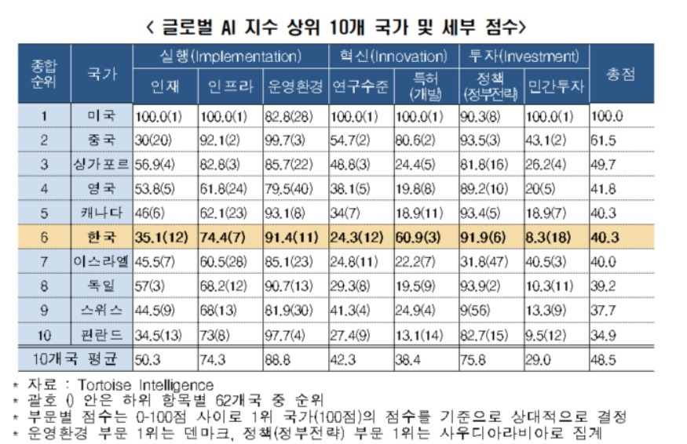

“한국 인공지능(AI) 시장 가치” 보고서에 따르면 2022년 국내 AI 시장 규모는 20억 7천만 달러를 넘어섰다.
보고서는 2023년부터 연평균 25.44% 이상의 성장률로 2032에 약 199억 7천만 달러에 이를 것으로 전망한다.
한국 AI 시장은 2021년부터 확고한 기반을 갖추고 급속한 성장을 험하고 있으며, 이는 올해도 지속될 것으로 예상된다.
한국은 정부 지원, 고도로 숙련된 인력, 활발한 기술 생태계를 바탕으로 AI 연구, 개발, 상용화의 글로벌 허브로 부상했다.
한국 AI 시장의 주요 참가자로는 삼성전자, LG전자, SK텔레콤, KT, 네이버, 카카오엔터프라이즈, 마이크로 소프트, 구글, AWS, 뤼이드 등이 있다.
'국내 인공지능 분석 시장 전망, 2023-2027' 연구 보고서에서
국내 인공지능 시장은 2023년 전년 대비 17.2% 성장하여 2조 6,123 억원의 매출 규모를 형성할 전망이라고 금일 밝혔다.
해당 시장은 향후 5년간 연평균 성장률 14.9%를 기록하며 2027년까지 4조 4,636 억원 규모에 이를 전망이다.
2023년 6월 발표된 글로벌 3대 AI 지수 중 하나인 ‘글로벌 AI 지수’에 의하면, 우리나라의 AI 산업 수준은 62개국 중 종합순위 6위인 것으로 나타났다.
한국경제인협회 (한경엽)은 AI 특허(개발)와 정책(정부전략) 부문이 세계 상위 10위권 안에 드는 한국 AI 산업의 경쟁력이라고 분석했고,
AI 운영환경, 인재, 연구수준 부문은 지난 4년간 다소 개선되었으나 여전히 세계 10위권 밖에 머무르며 보완이 필요한 것으로 지적됐다.
한편 한국 AI 산업의 가장 부진한 부문은 AI 민간투자인 것으로 드러났다.
AI 기업 수 및 투자 규모 등을 의미하는 민간투자 부문에서 한국은 18위를 차지하여 총 7개 부문 중 최저 순위를 기록했다.
또한 지수 점수로도 8.3점에 불과하여 상위 10개국 평균(29.0)의 3분의 1에도 못 미치는 것은 물론, 홍콩(19.2점)과 인도(8.9점)에도 뒤처지는 것으로 드러났다.